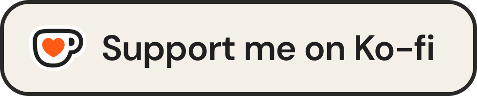

Allows you to restack poetry-formatted text - just select any poetry block and restack it.
-
1
Open any poetry-formatted Substack post
-
2
Highlight the poetry block you want to restack
-
3
Click the Restack with note button in the floating toolbar
-
4
Pick your quote card theme
-
5
Wait for the card to load
-
6
IMPORTANT: Keep the post preview next to your card (needed to notify the author you're restacking their post)
-
7
Hit post